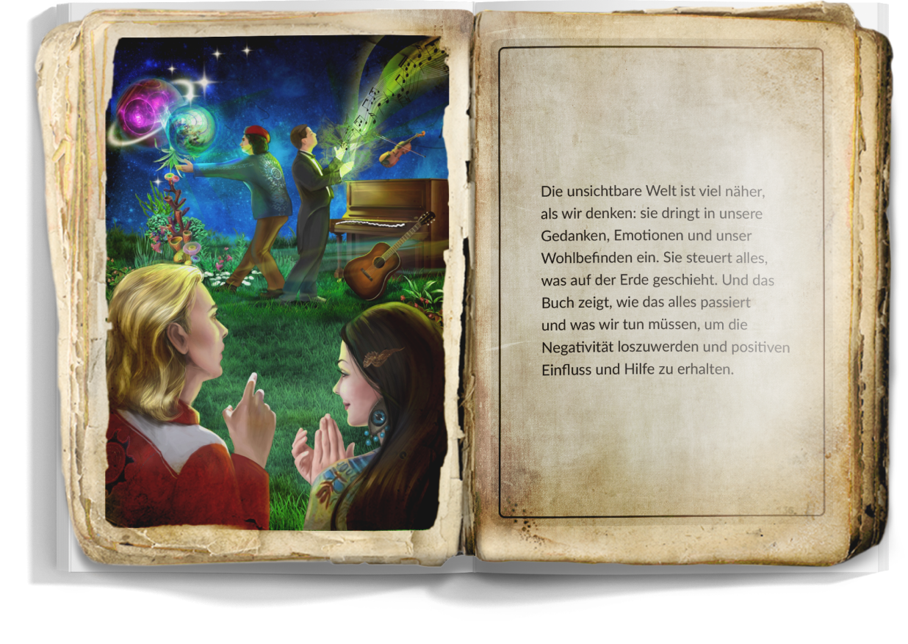

Der
Bestseller
2021
Bestseller
2021
Was erwartet
uns nach dem
irdischen Leben?
?
— Was ist die menschliche Seele und wo ist sie zu finden?
?
— Was ist die menschliche Seele und wo ist sie zu finden?
?
— Was ist die menschliche Seele und wo ist sie zu finden?
?
— Was geschieht mit einer Seele, die noch
nicht bereit ist, Gott zu begegnen, ihn aber
sehen wird?
?
— Wie kann man den Weg zu seiner
innersten Kraft öffnen und übernatürliche
Fähigkeiten entwickeln?
?
— Was ist die menschliche Seele und wo ist sie zu finden?
?
— Was ist die menschliche Seele und wo ist sie zu finden?
?
— Was ist die menschliche Seele und wo ist sie zu finden?
Gibt es Antworten auf all diese Fragen? Ja!
Ein Mensch kann Informationen aus der feinstofflichen Ebene empfangen.
Erfahrung des Channelings mit einer körperlosen Seele und ein faszinierender Bericht über
die Abenteuer "jenseits" – in einem Bestseller-Buch "Was uns jenseits der Grenze erwartet.
Oder die Geheimnisse von Atlantis.".
Es stellt sich heraus, dass Hogwarts keine Fiktion ist! Willkommen in Hogwarts.
Heiliges Wissen wartet auf Sie, das für Normalsterbliche unzugänglich ist.
Jan ist eine verlorene Seele, die sich in der feinstofflichen Welt
wiederfand und das eigene Schicksal vor und nach dem irdischen
Leben mit [Pseudonym der Autorin] geteilt hat, die seine Geschichte
sorgfältig niedergeschrieben hat.
Wir - Bewohner des Planeten Erde leben in völliger Ungewissheit,
da unsere Seele im Moment der Inkarnation ihr Gedächtnis verliert - um
all die Lektionen zu durchlaufen, die für sie vorbereitet wurden.
Deshalb ist es für uns sehr schwer zu verstehen:
- wie alles im irdischen Leben tatsächlich aufgebaut ist?
- wie man danach zu Harmonie und Frieden, Gelassenheit kommt?
- wo ist die Wahrheit?
Das Buch gibt Antworten auf diese Fragen, schenkt Zuversicht
und eröffnet Wege, den eigenen Platz und die eigene Bestimmung
zu entdecken.
Was geschieht mit uns nach dem irdischen Leben?

Die unsitchbare. Welt ist viel näher, als wir denken: sie dringt in unsere Gedanken, Emotionen
und unser Wohlbefinden ein. Sie steuert alles, was auf der Erde geschieht. Und das Buch zeigt,
wie das alles passiert und was wir tun müssen, um die Negativität loszuwerden und positiven
Einfluss und Hilfe zu erhalten
Lärm unterstreicht nur die Stille, Bewegung unterstreicht nur die Ruhe.
- Warum hat Gott das Böse zugelassen?
- Das Leiden ist die Kraft, die den Menschen dazu bringt, über den
Sinn des Lebens nachzudenken. Sie treibt ihn an, nach einem Ausweg zu suchen
und sich selbst weiterzuentwickeln.
- Das Leiden ist die Kraft, die den Menschen dazu bringt, über den
Sinn des Lebens nachzudenken. Sie treibt ihn an, nach einem Ausweg zu suchen
und sich selbst weiterzuentwickeln.
Über die Autorin
[Pseudonym der Autorin] sammelte seit über 17 Jahren heiliges Wissen über den
Aufbau der irdischen Welt, die Geschichte der ausgestorbenen Zivilisationen und
die Welt der feinstofflichen Materie.
Sie ist einen langen spirituellen Weg gegangen, hat viele Jahre in Retreats verbracht
und von den Weisen gelernt, die sich direkt an den Quellen des Wissens befanden.
Sie eignete sich heilige Techniken und energetische Praktiken an, die es ihren Schülern
ermöglichen, die feinstoffliche Ebene zu sehen, das Geheimnis vergangener
Inkarnationen zu ergründen und die Schätze ihrer Seelen zu entdecken, um ihre wahre
Bestimmung zu verwirklichen.
Frage an die Autorin
Geben Sie Ihre Kontaktdaten und Ihre Frage an die
Autorin des Buches ein. Wir sind sehr daran interessiert,
zu erfahren, was Sie von dem Buch halten!
Geben Sie Ihre Kontaktdaten ein und schon bald erhalten
Sie das Buch "Was uns jenseits der Grenze erwartet. Oder
die Geheimnisse von Atlantis." per E-Mail - absolut kostenlos!